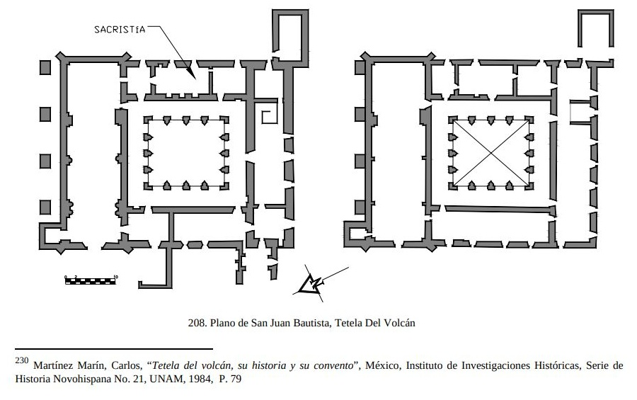

Conoce la distribución del antiguo convento de San Juan Bautista de Tetela del Volcán. Este plano histórico permite descubrir los distintos espacios que formaban parte de la vida cotidiana de la comunidad dominicana.
